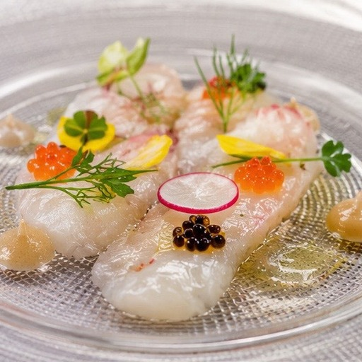
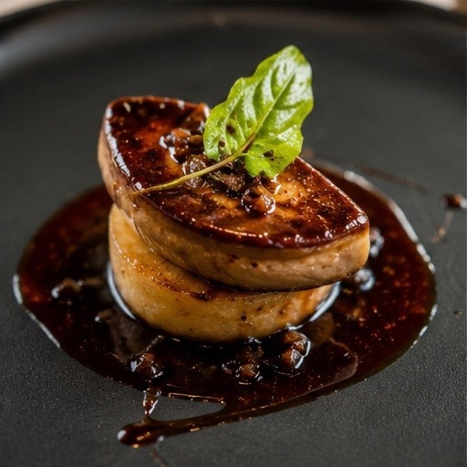

Concept
私たちについて
Message
Ce que je crois
フランス料理には、どこか敷居が高いという印象がついてまわります。白いクロス、聞き慣れない料理名、正しくないと落ち着かないマナー。そう感じてしまうのも、無理のないことだと思います。
けれど、二十代の終わりにリヨンとブルゴーニュの厨房で過ごした数年が、私にまったく逆のことを教えてくれました。あちらでフランス料理は、日曜の昼に家族が囲むものであり、仕事帰りに一杯とともにつまむものでもある。つまり、暮らしのすぐ隣にあるものでした。
帰国して店を持つとき、決めたことがひとつだけあります。技法は本国で習ったまま、どこも省かない。けれど、店の空気だけはうんと軽くする。──記念日のためだけの店にはしない、ということです。
大切な方との時間にも、家族の団らんにも、仲間とのお酒の席にも。皆さまの日常の中に、この小さな店が並んでいてくれたなら。それが、私たちにとって何よりの喜びです。
CHEF / PROPRIÉTAIRE 料理長 神谷 悠介


素材
その日いちばんを、その日のうちに
月に一度、お品書きを書き換えています。豊洲で選んだ魚、契約する農家から届く野菜、季節に一度しか出せないもの。仕入れが変われば献立も変わる、というだけの単純な理由です。黒板に走り書きの一皿があれば、それはたいてい、その日にいちばん良かったものです。

火入れ
技法は、省かない
フォンは骨から。ソースは煮詰めて漉して、また煮詰めて。手間のかかる工程ほど、味の芯になります。ここだけは向こうで習ったとおりに続けています。特別なことをしているわけではなく、当たり前をやめないでいる、という程度のことです。
もてなし
緊張しなくていい店であること
ドレスコードはありません。ナイフの持ち方も、テーブルマナーも気にする必要はございません。料理や素材について不明点があれば、都度ご説明します。苦手な食材やアレルギー、記念日のご希望は、ご予約のときにお聞かせいただければできる限りお応えします。サービス料もいただいておりません。
- Name
- 神谷 悠介 Yusuke Kamiya
- Career
-
都内のクラシックなフランス料理店で6年間、基礎を学ぶ。
渡仏し、リヨンのビストロおよびブルゴーニュのオーベルジュにて計4年間従事。
帰国後、都内ホテルのフレンチダイニングでスーシェフを務める。
2012年、世田谷・若林に「L'atelier Cuisine Française」を開く。 - Style
-
古典の技法を土台に、日本の魚と野菜を主役に据えた組み立て。
ソースは軽く、素材の輪郭を残す仕立てを好む。
※ 本サイトはデザインサンプルです。上記の人物名・経歴はすべて架空のものです。